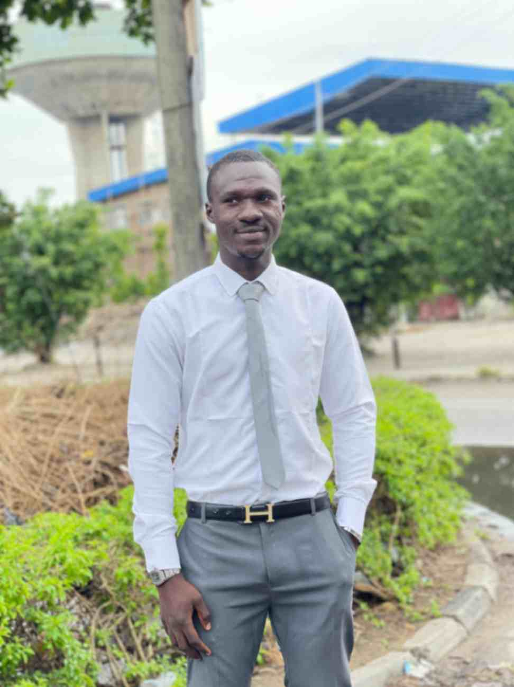

Welcome to WDD 130 | Goodluck Aberare
Hello! My name is Goodluck Aberare, and I am from the vibrant city of Lagos, Nigeria. Professionally, I work as an administrative assistant, interior decorator, and market analyst, which allows me to blend organization, creativity, and analytical thinking in meaningful ways. Outside of work, I enjoy traveling to new places, engaging in community volunteer projects that make a positive impact, and playing table tennis, which keeps me active and competitive. Currently, I am studying Web Design and Development at BYU, where I am eager to expand my technical skills and creativity. I am particularly excited about learning how to design and build user-friendly websites, understanding industry best practices, and exploring opportunities in the growing tech field. My ultimate goal is to combine my professional experience with my new web development skills to create innovative projects. I look forward to the journey ahead and the possibilities the future holds.